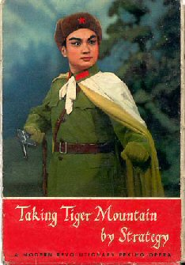

Thursday, September the 1st, 2005
back to: title, date or indexes
The current trade row about EU import quotas on cheap Chinese clothing is something I know little about, and understand even less. It has, however, led to frequent media use of such ringing phrases as “the Chinese trouser mountain”. During Mao's Cultural Revolution, one of the more preposterous operas of the time was Taking Tiger Mountain By Strategy, later used by Brian Eno as the title of one of his early records. (Brian, being Brian, enclosed the last two words in parentheses, a deft but inexplicable alteration.) Is it time for a revival of the opera, retitled Taking Trouser Mountain By Strategy? I hope so.
